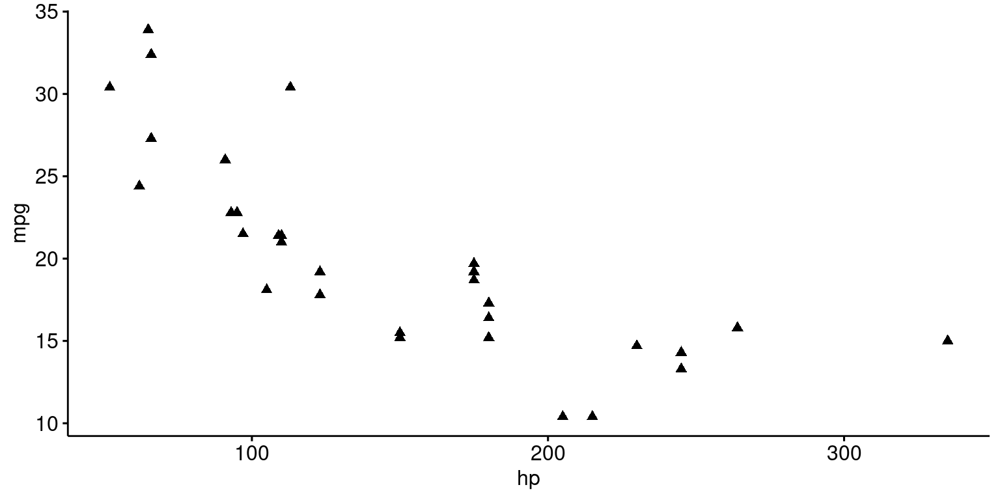
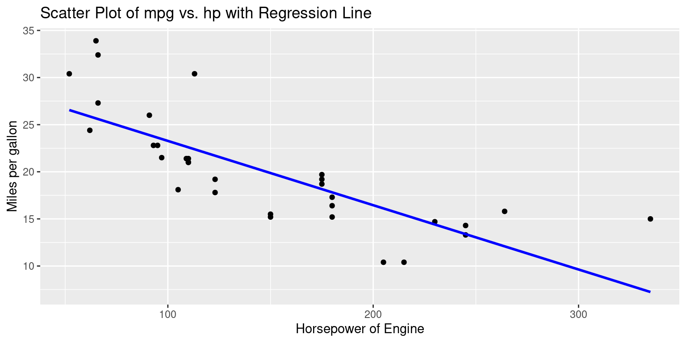
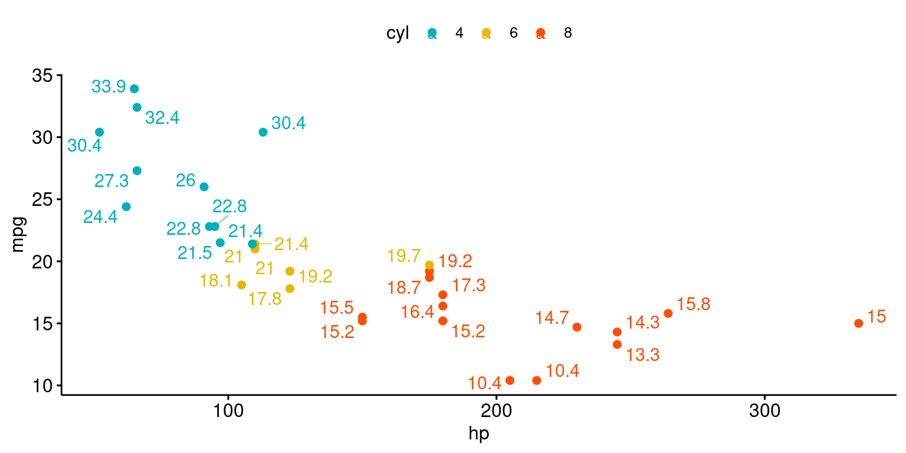

# Load the required libraries, suppressing annoying startup messages
library(dplyr, quietly = TRUE, warn.conflicts = FALSE)
library(tibble, quietly = TRUE, warn.conflicts = FALSE)
library(ggplot2, quietly = TRUE, warn.conflicts = FALSE) # For data visualization
library(ggpubr, quietly = TRUE, warn.conflicts = FALSE) # For data visualization
# Read the mtcars dataset into a tibble called tb
data(mtcars)
tb <- as_tibble(mtcars)
# Convert relevant columns into factor variables
tb$cyl <- as.factor(tb$cyl) # cyl = {4,6,8}, number of cylinders
tb$am <- as.factor(tb$am) # am = {0,1}, 0:automatic, 1: manual transmission
tb$vs <- as.factor(tb$vs) # vs = {0,1}, v-shaped engine, 0:no, 1:yes
tb$gear <- as.factor(tb$gear) # gear = {3,4,5}, number of gearsContinuous x Continuous data (2 of 2)
Sep 17, 2023.
Exploring bivariate Continuous x Continuous data, using ggplot2
This chapter demonstrates the use of the popular ggplot2 and ggpubr packages to further explore the interaction between bivariate continuous data.
Data: Suppose we run the following code to prepare the mtcars data for subsequent analysis and save it in a tibble called tb.
Scatterplot using ggplot2
ggplot(tb,
aes(x = hp, y = mpg)) +
geom_point() +
xlab("Horsepower of Engine") +
ylab("Miles per gallon") +
ggtitle("Scatter Plot of mpg vs. hp")Discussion:
The
ggplot2package uses a layering approach, enabling users to build plots incrementally, piece by piece, using a combination of data, aesthetics, and geometric objects.The function
ggplot()initializes the plotting system. It requires a dataset to operate on and an aesthetic mapping to determine how data variables will be plotted. Here, the dataset is represented bytb.Inside the
aes()function, which stands for aesthetics, the code specifies that the variablehpfrom thetbdata frame will be plotted on the x-axis and the variablempgwill be plotted on the y-axis. Hence, the resulting plot will display a relationship between horsepower (hp) and miles per gallon (mpg).The
geom_point()function is an added layer, instructingggplot2to render the relationship betweenhpandmpgas a scatter plot, with individual data points being represented as points.The functions
xlab()andylab()are used to set custom labels for the x and y axes, respectively. In this code, the x-axis is labeled as “Horsepower of Engine” and the y-axis is labeled as “Miles per gallon”.Finally, the
ggtitle()function is used to assign a title to the entire plot. In this instance, the title is set as “Scatter Plot of mpg vs. hp”, clearly indicating the purpose and content of the visualization.
ggscatter(tb,
x = "hp", y = "mpg",
shape = 17)
# Color by continuous variable
ggscatter(tb,
x = "hp", y = "mpg",
color = "mpg") +
gradient_color(c("blue", "gray", "red"))
# Add density distribution as marginal plot
library("ggExtra")
p <- ggscatter(tb,
x = "hp", y = "mpg",
shape = 17)
# Change marginal plot type
ggMarginal(p, type = "boxplot")# Add density distribution as marginal plot
library("ggExtra")
p <- ggscatter(tb,
x = "hp", y = "mpg",
color = "cyl")
# Change marginal plot type
ggMarginal(p, type = "boxplot")Scatterplot with Regression line using ggplot2
ggplot(tb, aes(x = hp, y = mpg)) +
geom_point() +
geom_smooth(method = "lm",
se = FALSE,
color = "blue") + # Added this line for the regression
xlab("Horsepower of Engine") +
ylab("Miles per gallon") +
ggtitle("Scatter Plot of mpg vs. hp with Regression Line")
ggplot(tb, aes(x = hp, y = mpg)) +
geom_point() +
geom_smooth(method = "lm",
se = TRUE,
color = "red") + # Added this line for the regression
xlab("Horsepower of Engine") +
ylab("Miles per gallon") +
ggtitle("Scatter Plot of mpg vs. hp with Regression Line")Discussion:
geom_smooth(method = "lm", se = FALSE, color = "blue"): This function adds a smoothed conditional mean.- The
method = "lm"argument indicates that a linear model (i.e., a regression line) should be used for smoothing. This line will depict the overall trend in the data. - If
se = FALSEthen the standard error bands (which show the uncertainty around the regression line) aren’t plotted. This determines whether or not the standard error bands (or confidence interval bands) are displayed around the smoothing line. In the case of linear regression (method = “lm”), these bands represent the 95% confidence interval around the predicted values. This means that if you were to repeatedly sample from the population and fit a regression model each time, you’d expect about 95% of the confidence intervals to contain the true regression line.
- The
ggscatter(tb,
x = "hp", y = "mpg",
add = "reg.line", # Add regression line
conf.int = TRUE, # Add confidence interval
add.params = list(color = "blue",
fill = "lightgray")
)+
stat_cor(method = "pearson", label.x = 3, label.y = 30) # Add correlation coefficientScatterplots with Categorical Variables
Scatterplot colored by a Categorical variable, using ggplot()
This will create a scatterplot of miles per gallon (mpg) against horsepower (hp), with each point colored according to the number of cylinders (cyl) in the engine.
# Create a Scatterplot of mpg vs. hp, colored by cyl
ggplot(tb, aes(x = hp,
y = mpg,
color = factor(cyl))) +
geom_point() +
labs(x = "Horsepower", y = "Miles per gallon") +
scale_color_discrete(name = "Cylinders") +
ggtitle("Scatter Plot of mpg vs. hp, for cyl={4,6,8}")Discussion:
The
aes()function, short for aesthetics, designates the variables and their roles in the plot. In this code:- The
hpvariable is plotted on the x-axis. - The
mpgvariable is mapped to the y-axis. - The
colorattribute is set based on thecylvariable, which presumably indicates the number of cylinders in a car engine. The use offactor(cyl)ensures that thecylvariable is treated as a discrete factor rather than a continuous variable, which is essential for color differentiation.
- The
geom_point()introduces a scatter plot layer, meaning that the relationship betweenhpandmpgwill be represented using individual points, with each point’s color reflecting the number of cylinders as specified in the aesthetic mapping.The
labs()function provides a convenient way to label the axes. Here, the x-axis receives the label “Horsepower” and the y-axis is labeled “Miles per gallon”.The
scale_color_discrete()function customizes the color scale for discrete variables. By specifying thenameargument as “Cylinders”, it ensures that the legend accompanying the color scale in the plot will be labeled as “Cylinders”, making it clear to viewers that the colors of the points represent different cylinder counts.
ggscatter(tb,
x = "hp", y = "mpg",
color = "cyl", # Color by groups "cyl"
shape = "cyl", # Change point shape by groups "cyl"
rug = TRUE # Add marginal rug
)# Extending the regression line --> fullrange = TRUE
# Add marginal rug (marginal density) ---> rug = TRUE
ggscatter(tb,
x = "hp", y = "mpg",
add = "reg.line", # Add regression line
color = "cyl", # Color by groups "cyl"
shape = "cyl", # Change point shape by groups "cyl"
fullrange = TRUE, # Extending the regression line
rug = TRUE # Add marginal rug
) +
stat_cor(aes(color = cyl),
label.x = 3) # Add correlation coefficientggscatter(tb,
x = "hp", y = "mpg",
add = "reg.line", # Add regression line
conf.int = TRUE, # Add confidence interval
color = "cyl", # Color by groups "cyl"
shape = "cyl" # Change point shape by groups "cyl"
)Scatterplot faceted by a Categorical variable, using ggplot()
This will create a scatterplot of miles per gallon (mpg) against weight, with each plot faceted by the number of cylinders in the engine (cyl).
# Create a Scatterplot of mpg vs. hp, faceted by cyl
ggplot(tb,
aes(x = hp,
y = mpg,
color = cyl)) +
geom_point() +
facet_grid(. ~ cyl) +
ggtitle("Scatter Plot of mpg vs. hp, for cyl={4,6,8}")Discussion:
The foundational layer is initialized with the
ggplot()function. This function takes in a dataset,tb, and aesthetic mappings that determine how variables are displayed. In this piece of code:hpis chosen to be plotted on the x-axis.mpgis selected for the y-axis.- The color of the points will be determined by the
cylvariable.
The addition of the
geom_point()layer ensures that a scatter plot will represent the relationship betweenhpandmpg. Each point’s color will correspond to the value of thecylvariable.The
facet_grid()function introduces the concept of faceting. Faceting divides a plot into multiple panels based on the levels of one or more factors. In this case, the plot is faceted horizontally (~ cyl), meaning that separate panels are created for each unique value ofcyl. The.before the~indicates that there’s no faceting vertically.Finally, the
ggtitle()function provides the entire plot with a title, which is “Scatter Plot of mpg vs. hp, for cyl={4,6,8}”. This title clearly communicates the main theme of the plot and indicates that it showcases relationships for cars with 4, 6, or 8 cylinders.
# Color by continuous variable
ggscatter(tb,
x = "hp", y = "mpg",
color = "mpg",
facet.by = "cyl"
) ggplot(tb,
aes(x = hp,
y = mpg,
color = cyl)) +
geom_point() +
facet_grid(cyl ~ .) +
ggtitle("Scatter Plot of mpg vs. hp, Faceted Vertically by cyl")Discussion:
The primary difference between the two code snippets lies in how the faceting is implemented using the
facet_grid()function.In the original code,
facet_grid(. ~ cyl)is used, which means the scatter plots are faceted horizontally based on the unique values of thecylvariable; each unique cylinder count gets its own column.Conversely, in the updated code with
facet_grid(cyl ~ .), the scatter plots are faceted vertically based on the unique values of thecylvariable; each unique cylinder count gets its own row.
ggplot(tb,
aes(x = hp,
y = mpg,
color = cyl)) +
geom_point() +
facet_wrap(~ cyl, ncol = 3) +
ggtitle("Scatter Plot of mpg vs. hp, Wrapped Facets by cyl")Discussion:
This approach creates a wrapped grid of facets based on
cyl.The
ncol = 3argument specifies that up to three facets will be placed in a row before wrapping to the next row. You can adjust this as needed based on the number of levels in the faceting variable and the desired layout.
ggplot(tb,
aes(x = hp,
y = mpg,
color = cyl)) +
geom_point() +
facet_grid(cyl ~ gear) +
ggtitle("Scatter Plot of mpg vs. hp, Faceted by cyl and gear")Discussion:
In this code, within the
aes()aesthetics function:- The variable
hpis mapped to the x-axis. - The variable
mpgis mapped to the y-axis. - The color of individual points is determined by the
cylvariable, which probably represents the number of cylinders in an engine.
- The variable
The
geom_point()function is introduced to represent the relationship betweenhpandmpgas a scatter plot. The colors of the individual points will correspond to the values of thecylvariable.The
facet_grid(cyl ~ gear)function is the standout feature in this code. Here, the plots are faceted based on two categorical variables:cyl, which is mapped to rows. Each unique value ofcylwill generate a new row of plots.gear, which is mapped to columns. Each unique value ofgearwill generate a new column of plots.- The resultant grid will represent combinations of
cylandgearvalues, with each cell in the grid showing the relationship betweenhpandmpgfor a specific combination ofcylandgear.
# Color by continuous variable
ggscatter(tb,
x = "hp", y = "mpg",
color = "cyl",
facet.by = c("cyl","gear")
) Scatterplot colored by a Categorical variable, with textual annotation, using ggpubr()
# Textual annotation
ggscatter(tb,
x = "hp",
y = "mpg",
color = "cyl",
palette = c("#00AFBB", "#E7B800", "#FC4E07"),
label = "mpg",
repel = TRUE)
Bubble Chart
ggscatter(tb,
x = "hp", y = "mpg",
color = "cyl",
size = "wt", alpha = 0.5) +
scale_size(range = c(0.5, 15)) # Adjust the range of points sizeReferences
[1] Everitt, B. S., & Hothorn, T. (2014). A Handbook of Statistical Analyses Using R. Chapman and Hall/CRC.